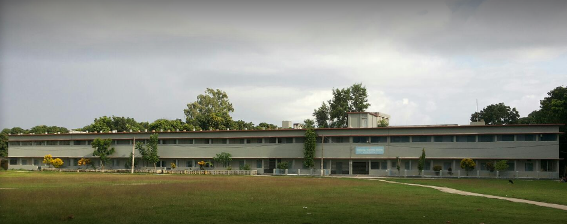

History of Nawabgonj Govt. College
In 1365, Firoz Tughlak invaded Kather, as Rohilkhand was then called.[8] In the time of Akbar (1542 -1605), Rohilkhand or Kather (also spelled as Kuther) was divided into two Sarkars or sirkars (Budaun and Sambhal),[9] containing 60 mehals[2] or parganas. Sambhal sarkar was under Delhi Subah and Budaun sarkar was under Awadh Subah. Bareilly was one of the mahals under Budaun sarkar covering an area of 27,61,227 Bighas. (An Akbari bigha was equal to 3,025 square yards). After First Rohilla War(1773–1774), Rohilkhand (or Rohilla Riyāsat[10]) fell to Awadh and later in the hands of East India Company after treaty of 1801[11] with Nawab Saadat Ali Khan II. In 1801-2, Rohilkhand was divided into two districts, Bareilly and Moradabad. Afterwards, several new districts (Pilibhit, Rampur, Shahjanpur, Rudrapur and others) were carved out of Rohilkhand and some parts were transferred to other districts (Kaimganj to district Farrukhabad and Gola to district Lakhimpur). In 1821, the Budaun District was formed and in the same year a Tehsildaree was established at Nawabganj and a new Nawabganj pargana was formed by taking villages from Crore (now Tehsil Sadar, Bareilly), Bisalpur, and Pilibhit covering an area more than 1,40,000 acres with nearly 1,00,000 acres of cultivated land. For full history, see the Bareilly Settlement Report By S.M.Moens, North-Western Provinces Government, 1874.[2]